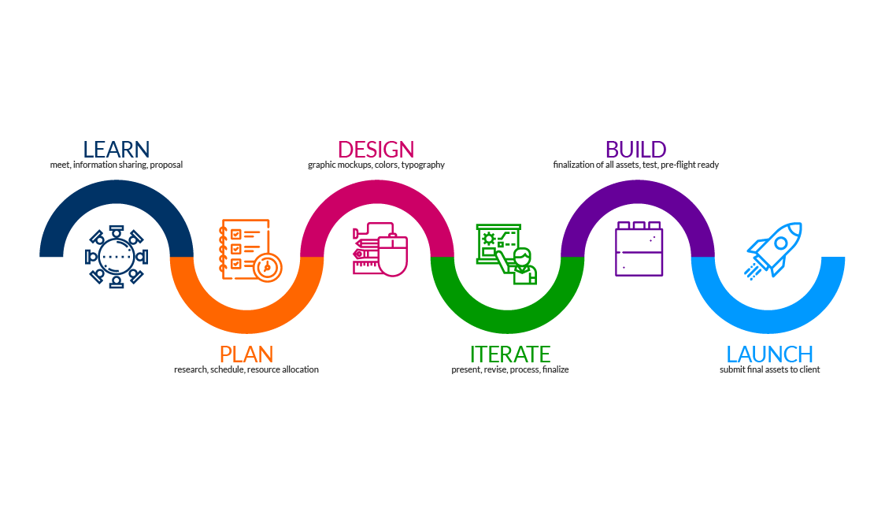

Sporties - Sports Connection App

UI-UX Case Study concept to boast productivity and exposure with local sport communities!
Project Overview
Sporties, the groundbreaking sports connection app, emerges as the first-ever platform catering to coaches and players, facilitating team formation and local team participation. Available on both Android and iOS devices, Sporties aims to create a thriving sports community by fostering connections among local talents. The app, designed to be kid-friendly, enables players to discover local tryouts, access team statistics, and engage with the vibrant sports scene in their community. By emulating the concept of ESPN's player and team stats on a local level, Sporties becomes the go-to hub for maximizing connections and opportunities in the realm of local sports.
Problem Statement
The sports community faces a significant challenge in the fragmented nature of local sports connections, hindering the seamless formation of teams and the accessibility of opportunities for both coaches and players. Currently, there is a lack of a centralized platform that caters to the specific needs of the local sports scene, making it difficult for coaches to recruit players and players to discover relevant tryouts and teams. Additionally, the absence of a comprehensive local statistics system limits the ability to track individual and team performance, hindering the community's engagement in celebrating local sports achievements. This fragmentation within the local sports ecosystem calls for a solution that unifies team formation, provides easy access to local tryouts, and introduces a comprehensive stats feature to maximize connections and opportunities within the sports community. Sporties aims to address these challenges and become the go-to platform for enhancing the local sports experience.
Project Goals
Sporties aspires to revolutionize the sports community by providing a unified platform for coaches and players. The primary goal is to streamline the team formation process, making it easier for coaches to recruit players and for players to join local teams. The app emphasizes the importance of connecting local talents, whether it be for tryouts, tournaments, or simply to enhance the sense of community within the sports ecosystem. By offering local team statistics, Sporties aims to create an environment where players can track their progress, coaches can assess team performance, and the entire community is engaged in celebrating local sports achievements.
Design Process
Sporties design process followed a user-centric approach, emphasizing user research, competitive analysis, prototyping, usability testing, and iterative design refinements. The app's interface is crafted to be intuitive and engaging, seamlessly integrating video communication with gaming elements. Prototypes undergo rigorous testing with real users, ensuring the app meets user expectations and provides an enjoyable and accessible gaming and communication experience.
Roadmap
Phase 1: User Research and Conceptualization* Conduct thorough user research to gain insights into the needs and preferences of coaches and players in the local sports community. Ideate and conceptualize features that align with the desires of both user groups. Create initial wireframes and design concepts that serve as a foundation for the development process.
Phase 2: Prototyping and Design Refinement* Develop interactive prototypes based on user feedback from the initial concepts. Refine the app's design to ensure a seamless and intuitive user interface that caters to coaches, players, and the broader sports community. Conduct usability testing to iterate on design elements and enhance the overall user experience.
Phase 3: Development and Integration* Initiate the development of Sporties' core features, including the team formation hub, local tryout locator, and the comprehensive team and player statistics system. Seamlessly integrate these features into the app, ensuring stability and optimal performance across different devices. Conduct thorough testing to identify and address any potential issues.
Phase 4: Beta Testing and User Feedback* Launch a beta version of Sporties to a select user group, inviting coaches, players, and sports enthusiasts to provide extensive feedback. Gather insights on features, performance, and overall user experience. Utilize feedback to make final refinements before the official release to the public.
Phase 5: Public Launch and Marketing* Officially launch Sporties to the public, accompanied by a strategic marketing campaign. Monitor user adoption rates and collect initial feedback from the broader sports community. Implement post-launch support to address any immediate concerns or issues raised by users.
Phase 6: Ongoing Updates and Community Building (Duration: Continuous)* Commit to regular updates and enhancements based on user feedback. Actively engage with coaches, players, and sports enthusiasts to expand the app's features and reach. Foster a sense of community within Sporties by encouraging user interactions and participation.
Phase 7: Future Development* Continuously assess industry trends and emerging technologies in the local sports community. Plan future developments, including the introduction of new features, engagement strategies, and partnerships to enhance Sporties' capabilities. Stay at the forefront of the local sports landscape by adapting to evolving user expectations and technological advancements.
Target Audience

loading.....
User Research
User research for Sporties includes surveys and interviews to understand user preferences, pain points, and expectations from a social gaming app. Insights gained from this research will inform the app's features, game selection, and design choices..
Competitive Analysis
A competitive analysis is crucial to inform the app's design and features. It includes evaluating existing transit apps and similar services in the region to identify strengths, weaknesses, and opportunities. This analysis will guide the app's differentiation and the incorporation of best practices from competitors.
Observations: Survey, Google, Yelp
Quantitative Research
In the design phase of the Sporties sports connection app, quantitative research is primarily focused on surveys and data analysis. Surveys will be distributed to potential users, seeking numerical responses on their preferences, expectations, and challenges related to social gaming apps. Additionally, data analytics will be employed to assess user interactions and preferences with similar existing apps, examining factors such as user reviews, ratings, and feature usage. These quantitative insights will guide the app's design choices, ensuring it aligns with user expectations and needs, even before the actual development phase begins.
Screeners
To start our first phase of user testing I had emailed them over a quick questionare (with a scale based system) to get a general idea of the level of dedication towards the product, this ensures you have the right candidates!
~ How frequently do you currently use social apps?(1-10)
Person 1: (6), Person 2: (8), Person 3: (9),
~ Have active are you in sports(1-10)
Person 1: (7), Person 2: (7), Person 3: (10),
~ Is connecting with athletes locally important to you?(1-10)
Person 1: (10), Person 2: (8), Person 3: (7),
~ Do you see a future need for more social sport platforms?(1-10)
Person 1: (10), Person 2: (10), Person 3: (10),
~ Would you like to be recruited or tryout for a local sports team?(1-10)
Person 1: (6), Person 2: (7), Person 3: (9),
Empathy Map - Tara
Once I knew i had the right candidates for my user testing I gathered more inforamtion on the selected users, each having very unique lifestyles and perspectives to help us shape the best product.
Empathy Map - Luis
Empathy Map - Brett
User Persona
User Persona
User Persona
Pain Points
My final phase of research was to narrow down the most criticial issues from the overall experiance users were having. Google, Yelp, and Apple Reviews are extreamly valuable in this phase of research..
Preliminary Sketches
Once the first round of interviews (intro conversations *limited exposure) were complete I proceeded to sketch out some ideas for the mobile app. I try to usually spend about a half hour with three sessions of sketches to have different perspectives on my work when clearing my mind and refocusing on the idea. I try my best to never fall inlove with my work as perfection doesnt exist and there is ALWAYS room for improvement!
User Flow Chart
Low-Fidelity v1.0
For my first intial lofi design I focused on establishing a strong base. With a strong intial design base captivating the intent behind the "why", it becomes easier to make adjustments based of user feedback from user testing..
~ I always strive to do my best work whether it be skeches, intial designs or even just doodles!
Hi-Fidelity v1.0

User Testing - Prototype v1.0
Users were given a chance to give feedback from the intial design. In our user journey we will discuss the changes in which they found should be implemented for better UX...
User Journey 1
Once the first prototype was complete I sent it to our users for testing, here is where we collect the most essential feedback, the changes we make from here are meant to mold the project together.
~ Below are the 3 User's Journeys through our first version of our Mobile App!
User Journey 2
User Journey 3
Lo-Fidelity v2.0
Based on our users experiance reviews I was able to make the appropriate adjustments and satisy our users.. here are some of the major adjustments made..
Hi-Fidelity v2.0
Based on our users experiance reviews I was able to make the appropriate adjustments and satisy our users.. here are some of the major adjustments made..
Prototype Final Version
Once our users completed thier journey reviews I was able to get a complete idea of what i was missing, what needed to be implemented, and what major functionalities needed to stay or go..
Unique Features
~ Team Formation Hub: Sporties acts as a centralized hub for team formation, allowing coaches and players to connect seamlessly. Coaches can create teams, and players can join local teams based on their preferences and skills, enhancing the accessibility of sports opportunities within the community.
~ Local Tryout Locator: The app features a user-friendly interface that enables players to locate local tryouts easily. This functionality ensures that players can explore and participate in tryouts relevant to their interests and skill levels, fostering a more inclusive sports community. Competitive Edge with Leaderboards:
~ Team and Player Statistics: Sporties introduces a comprehensive stats feature, akin to ESPN's player and team statistics but at the local level. This allows players to track their individual performance, coaches to assess team progress, and the community to celebrate local sports achievements.
~ Kid-Friendly Interface: Recognizing the diverse user base, Sporties prioritizes a kid-friendly interface, ensuring that young players can navigate the app effortlessly. This promotes inclusivity and encourages the participation of the younger demographic in local sports activities.
Key Takeaways
In the development of Sporties, key takeaways emphasize the significance of creating a unified sports platform that caters to both coaches and players. The demand for streamlined team formation processes, easy access to local tryouts, and a comprehensive stats system highlights the app's potential to enhance community engagement in local sports. Sporties aims to be a catalyst for maximizing connections and opportunities within the local sports scene.
Style Guide / Usables
Once I had an idea of how I wanted the app to be structured I began researching popular design systems and wanted to create my own based off popular features, popular layouts and styling choices.